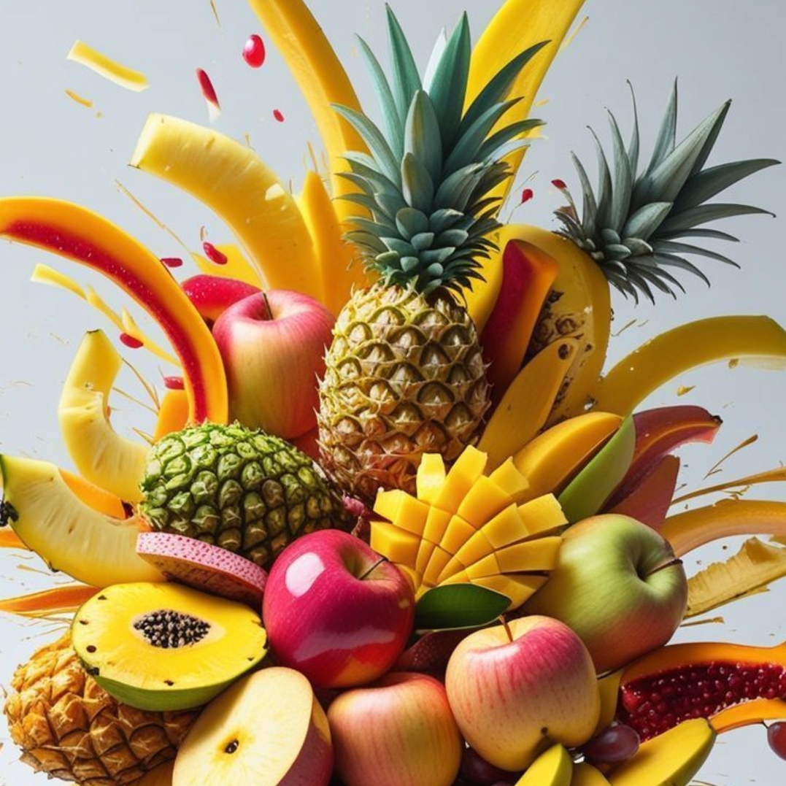
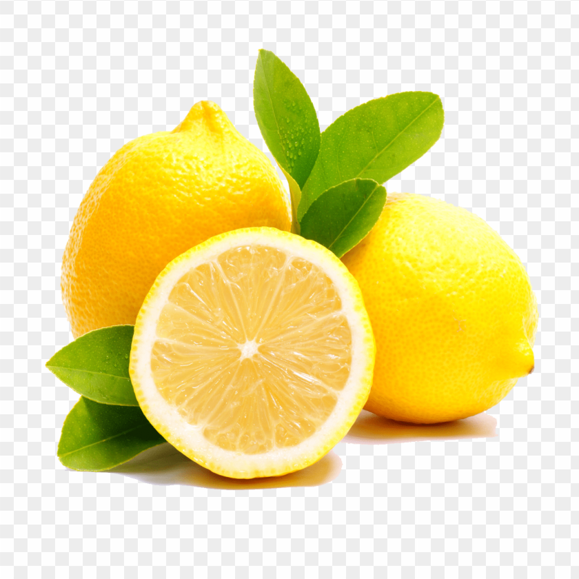
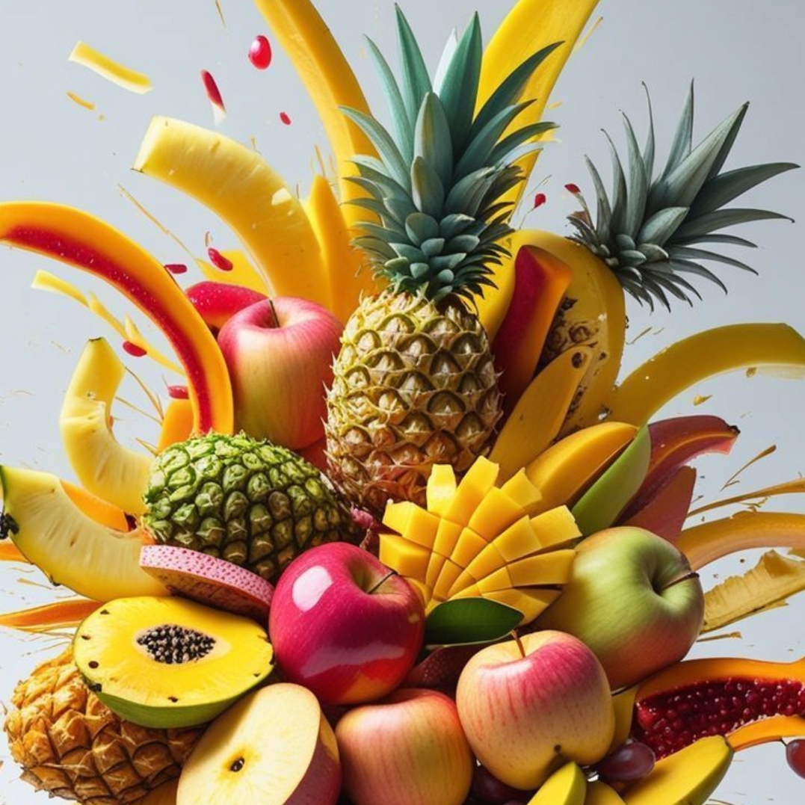
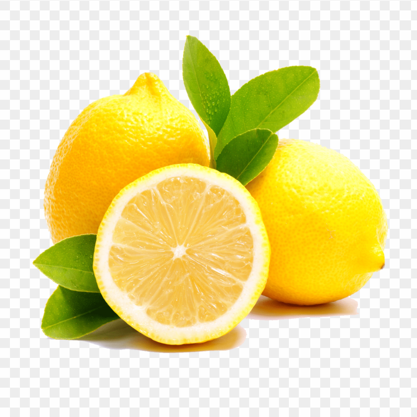

This gallery features a diverse selection of fresh fruits and vegetables. The images and vectors are used throughout the website to highlight natural colors, quality produce and a focus on freshness and healthy living.


 


